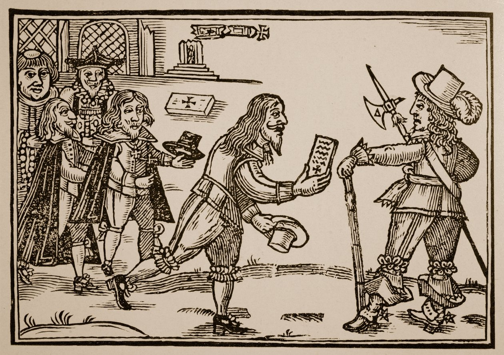

Show code
rm(list=ls())
library(tidyverse)
library(readxl)
data <- read_excel("data-assign/petitions/data/tpop_petitions_petitioners_v1_202208.xlsx")Let’s practice what we have learned during the first session on extracting information from qualitative dimensions. Let’s focus on a completely different data set that the one we have used so far. The Petitioning in Early Modern England data set consists of 2,847 petitions filed in England between 1573 and 1799 (Waddell and Howard 2022). As well as the text itself, it includes information on date, petitioners, topic, administrative responses, etc. Petitions were a crucial mode of communication between the ‘rulers’ and the ‘ruled’, so they provide a vital source for illuminating the concerns of the people, from noblemen to paupers. The data is hosted in this repository.

Download it into a folder of your choice and read it into R. Remember to set the working directory and load the necessary packages.
Explore how the data set looks like. How many observations does it contain? What each observations refers to (unit of analysis)? What kind of information does it report about each observation?
Were the petitions contained in this data set filed all over England or in particular counties?
What were the two most common topics for filing a petition. Draw a bar plot to visualise this information. Which fraction of all the petitions these two topics represent? Use also the information of subtopic to shed more light on this issue.
Imagine that you are especially interested in “poor relief”. Can you provide more information about who was filing these petitions and the type of response they got from the Royal authorities.
The downloaded files are contained in a folder with a very long name that you can perhaps simplify it. Once you have done so and set the working directory in R, you can use list.files() to tell you what folders and files are located in a given folder.^[Typing the command with nothing in parentheses R will show you the contents of the working directory. By contrast, list.files("/data)" will list the files in the folder named data.
In my case, I put the files in the folder data-assign, so I can read in using read_excel() (remember to load the package readxl).
Let’s explore how the data set looks like.
# A tibble: 1,728 × 19
petition_id county year date topic subtopic named_petrs subscribers
<dbl> <chr> <chr> <chr> <chr> <chr> <dbl> <dbl>
1 1 Derbyshire 1632 after 25… pate… anti 1 7
2 2 Derbyshire 1639 20 April… cott… pro 1 3
3 3 Derbyshire 1649 13 March… poor… reimbur… 1 0
4 4 Derbyshire 1652 1652 rates pro 1 0
5 5 Derbyshire 1655 24 April… liti… pro 1 0
6 6 Derbyshire 1655 24 April… liti… pro 1 17
7 7 Derbyshire 1665 4 April … offi… neglect 0 20
8 8 Derbyshire 1680 5 Octobe… other prison … 0 6
9 9 Derbyshire 1680 5 Octobe… poor… pro 1 0
10 10 Derbyshire 1680 5 Octobe… liti… anti 1 0
# ℹ 1,718 more rows
# ℹ 11 more variables: petition_type <chr>, petition_gender <chr>,
# sub_gender <chr>, response_cat <chr>, petitioner <chr>, abstract <chr>,
# repository <chr>, collection <chr>, reference <chr>, ll_img <chr>,
# bho_transcribed <chr>As indicated above, this data frame contains 1,728 rows, that is observations. Each row refers to petitions filed in England during the period of study. The unit of analysis is therefore these petitions. There are 19 columns, meaning that there 19 pieces of information about these petitions. Given that we are focusing on qualitative dimensions, we will explore things like the locations where these petitions were filed (county), what they refer to (topic and subtopic), the type of petition (petition_type), the name and gender of the petitioner (petition_gender) or the response they received (response_cat). The data set also includes a textual description of the petition itself (abstract).
Regarding the particular questions indicated above, you can list the places or origin of these petitions by using count() on the variable county.
# A tibble: 5 × 2
county n
<chr> <int>
1 Cheshire 613
2 Derbyshire 94
3 Staffordshire 239
4 Westminster 422
5 Worcestershire 360Doing the same by topic and sorting the results in descending order gives you the most important topics behind the petitions. You could also do it by subtopic but the results are not that clearcut.
# A tibble: 13 × 2
topic n
<chr> <int>
1 litigation 474
2 poor relief 290
3 rates 174
4 paternity 133
5 cottage 129
6 employment 121
7 officeholding 93
8 other 85
9 military relief 58
10 alehouse 53
11 imprisoned debtors 44
12 charitable brief 37
13 dissenting worship 37We can have a look at the distribution of petitions by displaying it into a graph.
Let’s now compute the fraction that the two most common categories represent (ouf all the petitions). As we know, count() generates a data frame with two columns, one listing the categories present in the field we are exploring and the other, named n, indicating the number of observations belonging to each category. Building on that, we can create another field that computes that fraction by dividing the number of cases (n) by the total number of observations (sum(n)). Instead of summing up the values of the most common categories ourselfs, we utilise the function cumsum() to do it for us and report the cumulative frequency. Lastly, the last line ask R to round the fields fraction and cum_sum up to 2 decimal places.1
1 across() within mutate() is a very useful short cut for implementing the same operation to a set of different columns.
# A tibble: 13 × 4
topic n fraction cum_sum
<chr> <int> <dbl> <dbl>
1 litigation 474 0.27 0.27
2 poor relief 290 0.17 0.44
3 rates 174 0.1 0.54
4 paternity 133 0.08 0.62
5 cottage 129 0.07 0.69
6 employment 121 0.07 0.76
7 officeholding 93 0.05 0.82
8 other 85 0.05 0.87
9 military relief 58 0.03 0.9
10 alehouse 53 0.03 0.93
11 imprisoned debtors 44 0.03 0.96
12 charitable brief 37 0.02 0.98
13 dissenting worship 37 0.02 1 The topics “litigation” and “poor relief” therefore constitute 44 per cent of the total number of petitions.
To know more about what is behind these topics, you can use subtopic but focusing only on particular “topics” (categories within topic). The following for instance reports what are the most common subtopics for “poor relief” (you can explore this further focusing on other topics).
# A tibble: 15 × 2
subtopic n
<chr> <int>
1 pro 174
2 <NA> 65
3 removal 23
4 anti 10
5 pauper apprenticeship 4
6 reimbursement 4
7 pro: housing 2
8 anti: for kin support 1
9 anti: pauper apprenticeship 1
10 pauper apprenticeship: exception 1
11 pro: county 1
12 pro: pauper apprenticeship 1
13 pro: rentable housing 1
14 pro: settlement 1
15 settlement certificate 1It seems a significant majority of petitions under this topic were in favour of “poor relief” (174 + 2). Only 12 petitions seem to be anti-“poor relief”.
Regarding who was filing these petitions, the field petition_type shows that they could be filed individually (the majority), by multiple persons or collectively. I am not expert on these sources, so we should make sure that we understand what these categories actually mean.
# A tibble: 5 × 2
petition_type n
<chr> <int>
1 collective 45
2 collective on behalf 6
3 multiple 13
4 multiple on behalf 2
5 single 224We could continue this exploration focusing perhaps on “single” petitions and exploring the gender of the petitioner (petition_gender) or the response they received (response_cat). I leave that to you.